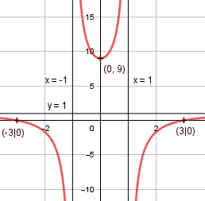

Aufgabe 123 (9 - x2) f(x) = ---------- (1 - x2) Quotientenregel erste Ableitung: u = 9 - x2, u' = -2x v = 1 - x2, v' = -2x -2x * (1 - x2) - (-2x) * (9 - x2) f'(x) = ----------------------------------- (1 - x2)2 -2x + 2x3 + 18x - 2x3 f'(x) = ----------------------- (1 - x2)2 16x f'(x) = ---------- (1 - x2)2 Quotientenregel zweite Ableitung: u = 16x, u' = 16 v = (1 - x2)2 Kettenregel: v' = 2 * (-2) * (1 - x2) = - 4x * (1 - x2) 16*(1 - x2)2 - (-4x) * (1 - x2) * 16x f''(x) = --------------------------------------- (1 - x2)4 (1 - x2) * [16 * (1 - x2) + 64x2] f''(x) = ----------------------------------- (1 - x2)4 16 - 16x2 + 64x2 f''(x) = ------------------ (1 - x2)3 48x2 + 16 f''(x) = ------------ (1 - x2)3 Zur Beurteilung, ob f'''(x) ≠ 0 : (Begründung siehe Aufgabe 105) u = 48x2 + 16, u' = 96x u' f'''(x) = --- v 96x f'''(x) = ----------- ≠ 0 für alle x ≠ 0, 1, -1 (1 - x2)3 Polstellen, Nenner = 0: 1 - x2 = 0|+x2 x2 = 1|ⱱ x = ± 1 Nenner = 0 und Zähler = 9 - (±1)2 = 8 ≠ 0 --> senkrechte Asymptote Definitionsbereich: -∞ < x < ∞, x ≠ 1, - 1 Waagerechte Asymptote: 8 f(x) = -x2 + 9 : -x2 + 1 = 1 + ---------- -(-x2 + 1) (-x2 + 1) ---------- 8 8 1 + --------- geht gegen 1 für x --> ± ∞ (-x2 + 1) Wertebereich: -∞ < f(x) < 1, 9 ≤ f(x) < ∞ (siehe Asymptoten und Extrempunkte) Symmetrie zur y-Achse bzw. zum Punkt (0|0): (9 - (-x)2) 9 - x2 f(-x) = ------------ = --------- = f(x) (1 - (-x)2) 1 - x2 --> Achsensymmetrie -(9 - x2) -f(-x) = ------------ ≠ f(x) 1 - x2 --> keine Punktsymmetrie Nullstellen: f(x) = 0 (9 - x2) ---------- = 0 |*(1 - x2) (1 - x2) 9 - x2 = 0 |+x2 x2 = 9 |ⱱ x1,2 = ± 3 N1(3|0), N2(-3|0) Schnittpunkt mit der y-Achse: 9 - 02 f(0) = -------- = 9 (1 - 02) Sy(0|9) Extrempunkte: f'(x) = 0 16x ---------- = 0 |*(1 - x2)2 (1 - x2)2 16x = 0 |:16 9 - 02 x = 0; f(0) = -------- = 9 1 - 02 48 * 02 + 16 f''(0) = --------------- > 0 --> Tiefpunkt (0|9) (1 - 02)3 Wendepunkte: f''(x) = 0 48x2 + 16 ------------ = 0 |*(1 - x2)3 (1 - x2)3 48x2 + 16 = 0 |-16 48x2 = -16 |:48 1 x2 = - --- |ⱱ --> keine Lösung 3 --> keine Wendepunkte Graph:
